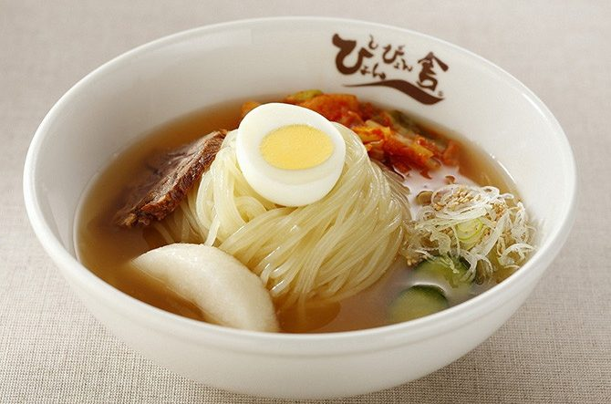
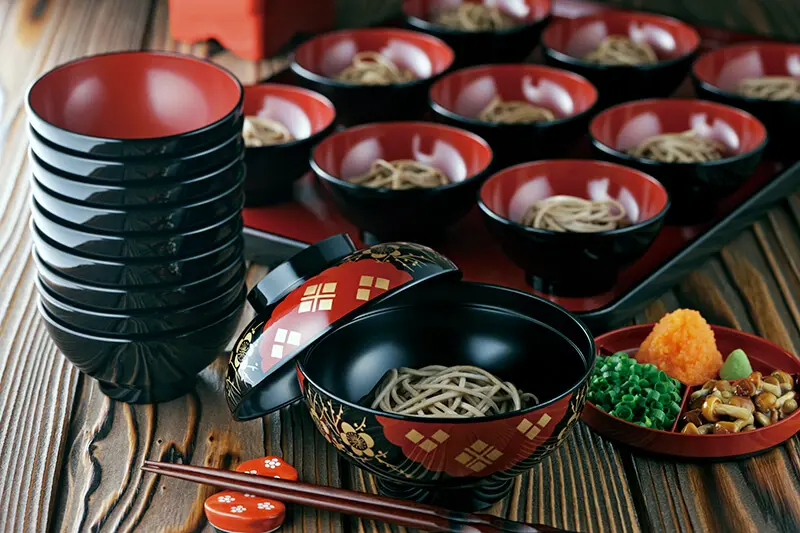
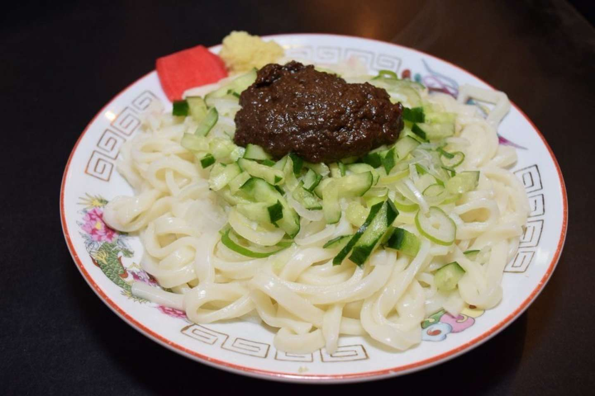

冷麺盛岡冷麺は、岩手ならではの自然の力や素材、人々の想いによって作り出され、盛岡市民に長きにわたって愛され育くまれてきました。 その結果、焼肉店は焼肉を食べる店というよりも盛岡冷麺を食べる店として位置づけられ、また、焼肉店以外の飲食店でも提供されたり、スーパーなどで多くの家庭用冷麺が販売されています。 このように盛岡市民にとって盛岡冷麺は、ラーメンやそば・うどんと同じように、日常に欠かせない麺料理としてすっかり定着しています。 さらに、全国各地の焼肉店で提供されている冷麺（平壌冷麺）と明らかに違うその味わいは、県外からやってくる観光客の間でも評判となり、最近では「わんこそば」「じゃじゃ麺」とともに「盛岡三大麺」として人気を博しています。 |
 |
わんこそば「わんこそば」は一口に小分けされた温かいそばを「わんこ（お椀）」に入れて薬味と一緒に食べる料理で、岩手県盛岡市と花巻市を中心とする郷土料理です。 一口に小分けされているので何杯でも食べ続ける事を前提としており、小分けにされたそばは10~15杯程度で一般的なそばの1人前の分量になります。 たくさんの分量を食べてもらえる様にそばの麺にも工夫がされており、小分けにし易いように通常の麺より長く切られ、喉越しが良くなっています。 |
 |
じゃじゃ麺「盛岡冷麺」「わんこそば」とともに「盛岡三大麺」に数えられる麺料理。「じゃじゃ麺同好会」なる組織をつくる熱烈な市民もいて、「盛岡っ子のソウルフード」という別名も。 中国からの引き揚げ者が、現地の家庭料理を盛岡で手に入る材料で再現したのが始まりといわれています。 見た目は、きしめんのような平打ち麺の上に、肉味噌ときゅうり、長ネギがのった、中華料理の「ジャージャー麺」に似たスタイル。でも、食べ方も味もまったく違います。 まずは食べる時に、お好みで卓上のラー油やニンニクなどを加え、思いっきり、かき混ぜます。 加える調味料の種類も量も自由なので、自分好みの味を見つける楽しみがあるという点がじゃじゃ麺ならではの魅力です。 |
 |